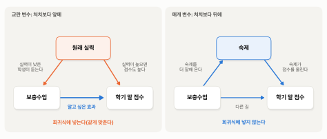

5. 넣으면 안 되는 변수 — 매개, 총효과, 나쁜 통제#
앞 절은 자료에 없는 변수는 넣을 수 없다는 데서 끝났습니다. 그렇다면 자료에 있는 변수는 많이 넣을수록 좋을까요? 회귀식에 변수를 많이 넣을수록 비교가 공정해진다고 생각하기 쉬운데, 그렇지 않습니다. 넣으면 안 되는 변수가 있습니다.
미리 답부터 말하면, 처치보다 먼저 정해진 것은 회귀식에 넣고, 처치 때문에 달라진 것은 넣지 않아야 합니다. 처치 때문에 달라진 것을 회귀식에 넣으면 효과의 일부가 계산에서 빠집니다. 이 절에서는 먼저 원인을 어디까지 따라가야 하는지 정리하고, 보충수업 교실에서 그 까닭을 본 뒤, 이 자료로 확인합니다.
그것을 바꾸면 달라지는가 — 원인을 어디까지 따라가나#
넣을 것과 넣지 말 것을 가르려면, 먼저 무엇이 원인이고 무엇이 그 원인이 거쳐 가는 길인지부터 정리해야 합니다. 여기서 흔히 생기는 혼란이 하나 있습니다.
일자리 제공 프로그램이 1978년 소득을 올렸다고 합시다. 그런데 따지고 보면 프로그램이 곧바로 소득을 올린 것은 아닙니다. 프로그램이 일할 기회를 주었고, 일하면서 습관과 경력이 생겼고, 그 경력으로 다음 일자리를 얻었기 때문에 소득이 올랐을 것입니다. 그렇다면 소득을 올린 원인은 프로그램일까요, 경력일까요, 다음 일자리일까요? 이렇게 따라가면 어디서 멈춰야 할지 알 수 없습니다.
2절에서 이 물음의 답을 이미 정해 두었습니다. 인과는 “그것 자체 때문인가”가 아니라 “그것을 바꾸면 결과가 달라지는가”를 묻고, 인과 효과를 묻는 것은 참가라는 손잡이 하나를 돌려 보는 것이라고 했습니다. 손잡이를 돌렸을 때 결과가 달라진다면, 그 사이에 무엇을 거치든 손잡이는 원인입니다. 담배가 몸속 물질을 거쳐 혈관을 상하게 해도, 담배를 끊으면 건강 위험이 줄어드니 담배가 원인인 것과 같습니다.
그러니 원인을 끝없이 따라 내려갈 필요가 없습니다. 어떤 손잡이를 돌리느냐가 질문을 정합니다. 이 장의 손잡이는 참가이고, 질문은 그 손잡이를 돌렸을 때 소득이 얼마나 달라지는가입니다. 경력이라는 손잡이를 돌리면 경력의 효과를 묻는 다른 질문이 됩니다. 참가가 경력을 거쳐 소득을 올렸다면, 경력은 참가의 효과가 지나간 길일 뿐입니다. 그 길이 있다고 해서 참가가 원인에서 빠지지는 않습니다.
보충수업과 숙제 — 효과가 지나가는 길#
보충수업 교실로 돌아가 봅시다. 이번에는 추첨으로 보충수업 참가 학생을 정했다고 합시다. 추첨이니 보충수업을 들은 학생과 안 들은 학생은 원래 실력도, 공부하려는 마음도 평균적으로 같습니다. 학기 말에 보니 보충수업을 들은 학생들의 점수가 평균 10점 높았습니다. 이 10점은 보충수업의 효과로 해석해도 됩니다.
그런데 이 학교는 모든 학생에게 같은 숙제를 내고, 보충수업 선생님은 학생들이 숙제를 했는지 꼬박꼬박 챙겼습니다. 그래서 보충수업을 들은 학생들이 숙제를 훨씬 잘해 왔습니다. 점수가 오른 까닭의 상당 부분이 그 숙제였을 것입니다. 보충수업이 숙제를 더 잘하게 만들었고, 숙제가 점수를 올린 것입니다.
이제 누군가 이렇게 분석했다고 합시다. “숙제를 얼마나 잘했는지가 다르면 공정한 비교가 아니니, 숙제 점수를 회귀식에 함께 넣어 같게 맞추자.” 숙제를 잘한 학생끼리, 못한 학생끼리 비교하면 보충수업을 들은 학생과 안 들은 학생의 점수 차이는 10점보다 훨씬 작게 나옵니다. 보충수업이 숙제를 더 잘하게 만들어 올린 점수가, 숙제를 같게 맞추는 순간 비교에서 빠지기 때문입니다. 남는 것은 숙제 말고 다른 길(수업 시간의 설명 같은 것)로 간 몫뿐입니다.
이렇게 원인과 결과 사이에서 효과가 지나가는 길이 되는 변수를 매개 변수(mediator)라고 부릅니다. 숙제는 보충수업과 점수 사이의 매개 변수이고, 경력은 일자리 제공 프로그램과 소득 사이의 매개 변수입니다.
교란 변수와 매개 변수 — 앞에 있나, 뒤에 있나#
교란 변수와 매개 변수는 둘 다 처치와도, 결과와도 함께 움직입니다. 회귀식만 보면 구별되지 않습니다. 둘을 가르는 것은 시간의 순서, 즉 그 변수가 처치보다 먼저 정해졌는지 뒤에 생겼는지입니다.
교란 변수는 처치보다 앞에 있습니다. “원래 실력”은 보충수업을 들을지 말지가 정해지기 전에 이미 있었습니다. 보충수업 들을 학생을 추첨으로 정하지 않았다면, 원래 실력은 누가 보충수업을 듣는지에도, 학기 말 점수에도 영향을 줍니다. 보충수업을 듣게 한다고 원래 실력이 바뀌지는 않습니다. 그래서 같게 맞춰야 합니다.
매개 변수는 처치보다 뒤에 있습니다. 숙제는 보충수업을 듣고 나서 생긴 차이이고, 보충수업이 만들어 낸 것입니다. 보충수업을 듣게 하면 숙제도 따라 바뀝니다. 그래서 같게 맞추면 안 됩니다.
3절의 그림 3-1로 말하면, 교란 변수는 처치와 결과에 함께 화살표를 보내는 자리에 있고, 매개 변수는 처치에서 결과로 가는 화살표 위에 있습니다. 변수가 어느 자리에 놓였느냐에 따라 회귀식에 넣어야 할 변수도 되고, 넣으면 안 되는 변수도 됩니다. 그림 5-1은 보충수업의 예로 교란 변수와 매개 변수를 나란히 그려, 화살표가 어떻게 다르게 이어지는지 보여 줍니다.

그림 5-1. 왼쪽: 원래 실력은 보충수업보다 앞에 있어 보충수업과 학기 말 점수 양쪽에 화살표를 보낸다. 오른쪽: 숙제는 보충수업보다 뒤에 있어 보충수업에서 학기 말 점수로 가는 길 위에 있다.
횡단면 분석 장에서 학력과 혈압을 두고 “인과가 아니다”가 정확히 무슨 뜻인지 따져 본 적이 있습니다. 지금의 말로 하면 그때 한 일이 바로 교란 변수와 매개 변수를 가르는 것이었습니다. 학력이 직업과 생활 습관을 바꾸고 그래서 혈압이 낮아진다면 직업과 생활 습관은 매개 변수이고, 그 길로 간 몫도 학력의 효과입니다. 반면 어린 시절의 가정 형편은 학력보다 먼저 정해져 학력과 혈압 양쪽에 영향을 주는 교란 변수입니다. 그 장의 회귀식에서 대졸 이상의 계수 −7.5를 학력의 효과라고 하지 못한 것은 매개 변수 때문이 아니라 이런 교란 변수를 회귀식에 넣지 못했기 때문이었습니다.
총효과와 직접 효과#
여기서 “다른 조건이 같다면”이라는 말을 조금 더 정확히 해 둡시다. 보충수업의 효과를 “다른 모든 것을 그대로 두고 보충수업만 바꾸면 점수가 얼마나 달라지나”라고 말하면 틀린 말이 됩니다. 숙제처럼 보충수업 때문에 따라 바뀌는 것까지 같게 맞춰 두면, 숙제를 거쳐 오른 점수가 빠지고 효과의 일부만 남기 때문입니다.
그래서 효과에는 두 가지가 있습니다.
총효과(total effect) — 처치를 바꿨을 때, 처치 때문에 따라 바뀌는 것들이 모두 함께 바뀐 상태에서 결과가 얼마나 달라지는지입니다. 보충수업이 숙제를 거쳐 올린 몫과 다른 길로 올린 몫을 모두 더한 것입니다.
직접 효과(direct effect) — 처치 때문에 따라 바뀌는 어떤 것(매개 변수)을 같게 맞춘 상태에서 결과가 얼마나 달라지는지입니다. 숙제를 같게 맞추고 남은 몫입니다.
우리가 보통 “효과”라고 말하는 것은 총효과입니다. 정책을 정하는 사람이 묻는 것도 “프로그램을 열면 소득이 얼마나 달라지나”이지, “프로그램을 열되 참가자의 경력은 그대로 묶어 두면 소득이 얼마나 달라지나”가 아닙니다. 총효과를 물을 때 그대로 두어야 하는 것, 즉 같게 맞춰야 하는 것은 처치보다 먼저 정해진 것뿐입니다. 참가 전의 나이, 학력, 참가 전 소득이 그렇습니다.
직접 효과가 쓸모없다는 뜻은 아닙니다. “보충수업의 효과는 숙제 덕분인가, 수업 덕분인가”처럼 효과가 어떤 길로 갔는지 알고 싶을 때는 직접 효과가 필요합니다. 다만 그때도 무엇을 같게 맞췄는지 밝히고, 그것이 총효과가 아니라는 것을 알고 해석해야 합니다. 또 매개 변수를 회귀식에 넣기만 한다고 직접 효과가 나오는 것도 아닙니다. 숙제를 잘해 온 데에는 보충수업 말고도 공부하려는 마음 같은 다른 까닭이 섞여 있기 때문입니다.
넣으면 안 되는 변수 — 이 자료로 확인하기#
이 자료에서도 똑같은 일을 해 볼 수 있습니다. 공정한 비교였던 실험의 회귀식에 “1978년에 일을 했는가”(1978년 근로소득이 0보다 컸는가)를 더미 변수로 함께 넣어 봅니다. 1978년에 일을 했는지는 프로그램에 참가한 뒤의 일이고, 프로그램이 바꿔 놓았을 수 있는 일입니다. 실제로 1978년에 일을 한 사람은 참가자 가운데 76%, 실험 대조군 가운데 65%였습니다. 프로그램은 사람들이 일자리를 얻게 해서 소득을 올렸을 수 있다는 뜻입니다. 다만 이 변수는 결과인 1978년 소득에서 바로 만든 것이라, 숙제처럼 처치와 결과 사이에 따로 있는 매개 변수라고 하기는 어렵습니다. 그래도 처치 뒤에 생긴 변수를 회귀식에 넣으면 무슨 일이 생기는지 보기에는 좋은 예입니다. 표 5-1은 이 변수를 넣기 전과 넣은 뒤의 결과입니다.
표 5-1. 실험의 회귀식에 처치 뒤의 변수를 넣으면
(1) 실험의 단순 비교 |
(2) + 1978년에 일했나 |
|
|---|---|---|
상수항 |
4,555 (408) |
−316 (511) |
\(\textit{treat}\) |
1,794 (633) |
961 (543) |
1978년에 일했나 |
7,537 (579) |
|
\(R^2\) |
0.018 |
0.290 |
주: 종속변수는 1978년 소득(달러), 괄호는 표준오차, 프로그램 참가자 185명과 실험 대조군 260명, \(n\) = 445.
표에서 (1)열은 실험의 단순 비교로, 2절에서 본 것과 같습니다. (2)열은 여기에 “1978년에 일했나”를 넣은 결과입니다. \(\textit{treat}\)의 계수가 1,794달러에서 961달러로 절반 가까이 줄었고, 표준오차가 543이라 0과 분명히 구별되지도 않습니다(\(p\)값 0.077). \(R^2\)은 0.018에서 0.290으로 크게 올랐습니다.
2절에서 실험의 회귀식에 참가 전의 변수(나이, 학력, 참가 전 소득 등)를 넣었을 때는 1,794달러가 1,676달러로 조금 줄었을 뿐입니다. 추첨으로 나눈 두 그룹은 참가 전의 특성이 이미 비슷하니, 같게 맞춰도 바뀔 것이 별로 없었던 것입니다. 그런데 참가 뒤의 변수 하나를 넣자 답이 절반 가까이 줄었습니다. (2)열의 961달러는 1978년에 일을 한 사람은 일을 한 사람끼리, 일을 하지 않은 사람은 하지 않은 사람끼리 참가자와 실험 대조군을 비교한 값입니다. 그래서 프로그램이 사람들을 일하게 만들어 올린 소득은 이 비교에서 빠졌습니다. 보충수업에서 숙제를 같게 맞춘 것과 같은 일입니다. 일을 한 사람끼리의 비교는 더 이상 추첨으로 나뉜 사람들의 비교가 아니므로, 961달러를 프로그램의 효과로 해석할 수는 없습니다.
\(R^2\)이 크게 오른 것에도 속지 말아야 합니다. 1978년에 일을 했는지의 더미 변수는 1978년 소득을 아주 잘 맞히는 변수입니다. 일을 안 했으면 소득이 0이니까요. 하지만 회귀식이 결과를 잘 맞히게 되었다고 해서 효과의 답이 좋아진 것은 아닙니다. 오히려 공정한 비교였던 숫자를 망쳐 놓았습니다.
이렇게 회귀식에 넣으면 오히려 효과의 답을 망치는 변수를 나쁜 통제(bad control)라고 부릅니다. 매개 변수가 대표적인 나쁜 통제입니다. 횡단면 분석 장의 표 H3-3 (3)열이 학력과 함께 소득분위를 넣은 것도, 소득이 학력 때문에 달라진 것이라면 같은 구조입니다. 그 열의 학력 계수는 “소득분위가 같다면”의 비교라서, 학력이 소득을 거쳐 혈압을 바꾼 몫은 빠져 있습니다. 그 자료에서는 대졸 이상의 계수가 −7.60에서 −7.49로 거의 그대로였지만, 그렇다고 소득분위를 넣어도 괜찮다는 뜻은 아닙니다. 숫자가 크게 움직이지 않았을 뿐, 처치 뒤에 달라졌을 수 있는 변수를 넣는다는 것 자체가 총효과를 묻는 회귀식에 맞지 않기 때문입니다.
무엇을 넣을지는 자료가 아니라 순서가 정한다#
정리하면, 총효과를 묻는 회귀식에 넣을 변수를 고르는 규칙은 단순합니다. 처치보다 먼저 정해진 것은 넣고, 처치 때문에 달라졌을 수 있는 것은 넣지 않는다. 그러니 “자료에 있는 변수를 모두 넣으면 안전하다”는 말은 틀렸습니다. 넣어야 할 것은 교란 변수이고, 넣으면 안 되는 것은 매개 변수입니다.
그리고 어느 변수가 어느 쪽인지는 자료가 알려 주지 않습니다. 회귀식은 숙제 잘하는 것이 보충수업 뒤에 생겼는지 앞에 있었는지 모릅니다. 두 변수가 함께 움직인다는 것만 압니다. 무엇이 무엇보다 먼저 정해졌고 무엇이 무엇을 바꾸는지는 자료를 만든 과정에 대한 이해에서 나옵니다. 그 이해는 AI에게 자료만 보여 주어서는 얻을 수 없고, 분석을 맡기는 사람이 알고 있어야 합니다.
💡 팁: AI에게 효과를 추정해 달라고 할 때는 통제 변수 목록을 맡기지 말고, 변수마다 처치보다 먼저 정해진 것인지를 함께 알려 주세요. “이 변수들은 모두 처치 전에 측정한 것이다”, “○○은 처치 뒤에 측정한 것이니 통제 변수에 넣지 마라”처럼요. 받은 보고서에서는 통제 변수 목록을 훑으며 처치 뒤에 생긴 변수가 들어 있지 않은지 확인하세요. AI에게 “통제 변수 가운데 처치의 결과일 수 있는 변수(bad control)가 있는지 점검해 줘”라고 물어볼 수도 있습니다.
요약 — 이 절의 물음과 답
다른 무언가를 거쳐 작용하는 것도 원인일까? 그렇다. 인과는 “그것을 바꾸면 결과가 달라지는가”를 묻는다. 프로그램이 경력을 거쳐 소득을 올렸다면 경력은 효과가 지나가는 길, 즉 매개 변수이고, 그 길로 간 몫도 프로그램의 효과다.
그렇다면 자료에 있는 변수를 몽땅 넣으면 안전할까? 그렇지 않다. 처치보다 먼저 정해진 교란 변수는 회귀식에 넣어야 하지만, 처치 때문에 달라진 매개 변수를 넣으면 효과의 일부가 빠진다. 실험의 회귀식에 “1978년에 일했나”를 넣으면 \(\textit{treat}\)의 계수가 1,794달러에서 961달러로 줄어든다. 어느 변수가 어느 쪽인지는 자료가 아니라 시간의 순서에 대한 이해가 알려 준다.